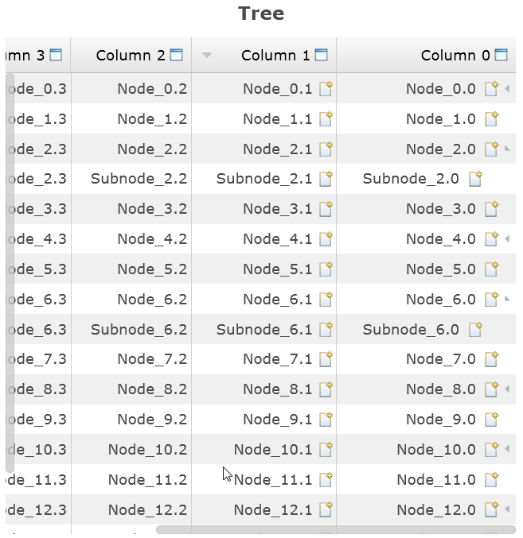

In this milestone we added support for right-to-left orientation. Currently, the implementation is done for Shell, Button, (C)Combo, Composite, ScrolledComposite, Group, Slider, Tree, Table, ProgressBar, Spinner, Menu and TabFolder. Like in SWT, the coordinate system of an RTL Composite is mirrored horizontally (the [ 0, 0 ] point is on top-right corner). This is a work in progress. We will extend the right-to-left support for other widgets in the next milestones.
